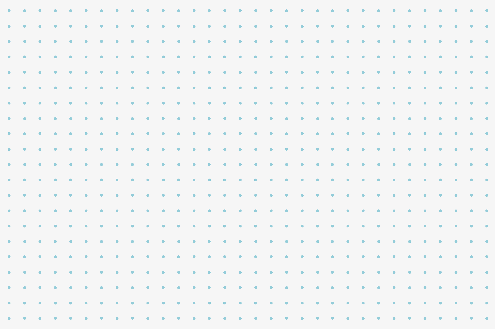
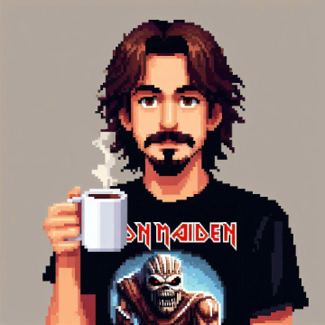

<div class="navbar-container">
  
  <div class="navbar-asides">
    <div>
      <div class="navbar-profile-container">
        <h2 class="navbar-profile-title">Adolfo Moyano</h2>
        
        <h3 class="navbar-profile-title">SRE</h3>
      </div>
      <div class="navbar-profile-info">
        <h1 class="navbar-profile-info-text">SRE / DevOps / Cloud Engineer from <br> Buenos Aires, Argentina.</h1>
      </div>
    </div>
    <div class="navbar-logos">
      
      
      
      
      
      
    </div>
  </div>
</div>